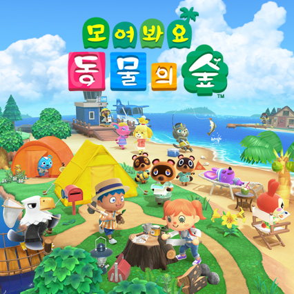
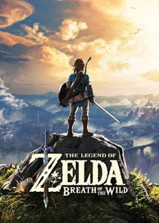

안녕하세요?? 오늘은 제가 좋아하는 닌텐도 게임에 대해 알아볼겁니다. 제가 좋아하는 게임은 모여봐요 동물의 숲, 젤다의 전설 야생의 숨결이 있는데요,
모여봐요 동물의 숲은 이미 존재하던 마을의 주민이 되어 살아가는 기존의 작품들에서 나아가 아무것도 없는 무인도에 초기 주민 둘과 함께 이주해 처음부터 섬을 개척해 나가는 게임이다. 벌과 나비부터 다랑어와 상어에 이르는 다양한 생물을 채집하여 박물관을 완성해 나가고, 직접 모은 재료를 가공해 만든 가구로 실내와 섬의 이곳저곳을 아름답게 꾸미고, 개성이 확실한 수많은 동물 주민들과 온라인으로 만난 다른 플레이어들과 교감하며 유유자적한 삶을 보내는 것이 주 콘텐츠다. 게임 진행에 따라서는 도로나 다리와 같은 큰 규모의 시설을 건설하는 것은 물론 지형까지 마음대로 수정할 수 있게 되어 마인크래프트나 심즈 시리즈, 심시티 시리즈를 비롯한 각종 건설 경영 시뮬레이션 게임이 부럽지 않은 나만의 공간을 만들 수도 있다.
젤다의 전설 야생의 숨결은 닌텐도가 개발/배급한 오픈 월드 액션 어드벤처 게임으로, 본가 젤다의 전설 시리즈의 18번째 작품이다. Wii U와 닌텐도 스위치로 발매되었다. 공식 한글판 부제는 '브레스 오브 더 와일드'로 황혼의 공주 때와는 달리 한국어로 번역되지 않았다. 이와는 별개로 공식 번역 명칭 공개 이전부터 관용적으로 쓰던 '야생의 숨결'과 이를 줄여 쓴 '야숨'도 널리 사용된다. 영문판은 Breath of the Wild, 일본판은 이를 카타카나로 표기한 ブレス オブ ザ ワイルド로 쓰며 각각 BotW, ブレワイ라고 줄여쓴다.
지금까지 제가 좋아하는 닌텐도 게임에 대해 알아보았습니다. 그럼 안녕~~!